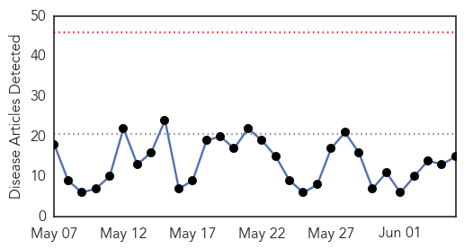
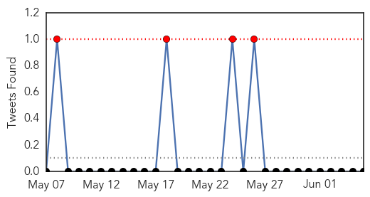
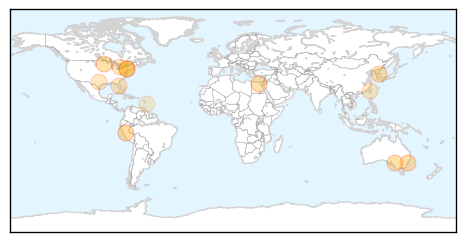
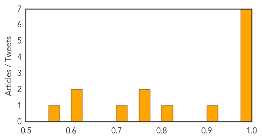
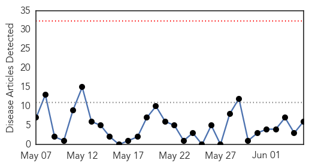
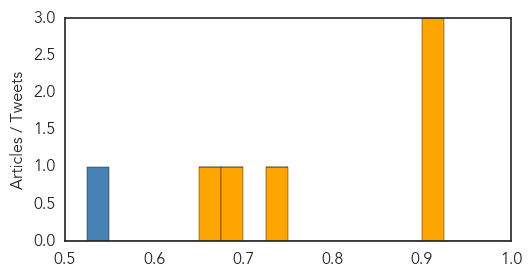

Influenza
30-Day Web Trend
0 alerts, 0 warnings

30-Day Twitter Trend
4 alerts, 0 warnings

Article Locations
Article Confidences
Top Articles:
- 0.998
- Close Glimpse At The Human Contraction of Bird Flu
- 0.996
- How Can Humans Catch The Bird Flu? « CBS Minnesota
- 0.993
- Flu cases tracking at record levels
- 0.993
- Why your next flu shot will be different
- 0.992
- Flu cases tracking at record levels
- 0.987
- Flu shot only 19% effective this winter
- 0.987
- Flu shot only 19% effective this winter
- 0.924
- Disease controllers had foresight of Korea’s weakness on new infectious diseases, news, Health News, AsiaOne YourHealth
- 0.804
- ‘Fowl’ play
- 0.751
- June 5, 2015 Archives
- 0.751
- June 4, 2015 Archives
- 0.706
- Avian Flu Scan for Jun 05, 2015
- 0.622
- VirScan Reveals Viral History in a Drop of Blood
- 0.605
- Single drop of blood can determine every virus you've ever had, scientists say — RT News
- 0.560
- Medical Officer of Health and Director of Primary Healthcare, Dr Kiran Kumar retires
Top Tweets:
-
No tweets found for Jun 05, 2015
Measles
30-Day Web Trend
0 alerts, 0 warnings

30-Day Twitter Trend
1 alerts, 0 warnings

Article Locations

Article Confidences
Top Articles:
- 0.908
- PAHO/WHO urges measles and rubella vaccination for travelers to the 2015 Americas Cup
- 0.906
- Secondary measles cases expected
- 0.903
- 1.3 Million Sierra Leone Children to be vaccinated against Measles, Polio
- 0.736
- Going to the Americas Cup? Get vaccinated!
- 0.700
- Almost every child in UAE immunised against measles: WHO report
- 0.656
- Anti Vaccine Movement Mostly Parents From Rich, White Areas
Top Tweets:
- 0.528
- 2/2 SARS probably spread more easily than MERS but it was no measles. Many people who caught SARS infected no one else.